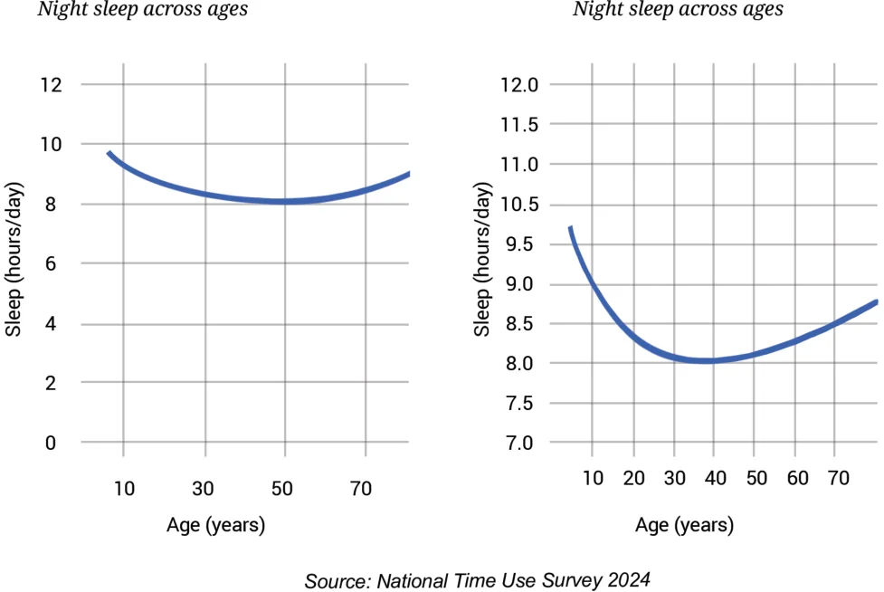

Do you remember the sleep time pie chart from the Proportionality chapter? Isn’t it amusing that there are animals that sleep as little as 2 hours per day and animals that sleep as much as 20 hours per day? How about insects - have you seen any insect sleep/rest? Humans typically sleep for about 7–9 hours a day. The sleep duration can vary greatly among people. The amount of sleep people need depends on age, living conditions, lifestyle (food they consume, the activities they engage in, etc.) among other factors. You may have observed that babies sleep longer than adults. The line graphs below show typical sleep durations of Indians across ages 6 to 75. The second picture is a zoomed-in version of the first picture.

Unlike the earlier graphs that were made up of a few connected line segments, this line graph looks like a smooth curve because it contains 80 data points that are placed very close to each other. Representing the same data using a column graph would require 70 columns, making the graph look cluttered and heavy. A line graph is a better choice here. It is light and captures the pattern well. From the graph we can see that the average sleep time for 6-year olds is about 9.5 hours per day. The daily sleep time decreases as we grow through teenage years and step into adulthood, touching about 8 hours a day between ages 30 and 50. After 50, the daily sleep time increases, reaching about 8.5 hours. You might wonder - why do newborns and infants sleep for so long? Do people in different countries sleep differently? Do animals also exhibit such patterns in sleep durations across age?